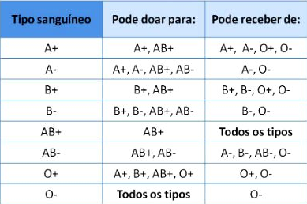

Tipagem Saguínea
Introdução:
Os tipos sanguíneos foram descobertos no início de século XX pelo médico Karl Landsteiner.
Ele descobriu que ao misturar amostras de sangue de diferentes pessoas, as hemácias se aglutinavam.
Em 1902, ele concluiu que a incompatibilidade deve-se aos diferentes tipos de sangue existentes e das reações imunológicas entre eles.
descoberta dos tipos sanguíneos, por Landsteiner, representou um marco na história da medicina e ajudou a salvar muitas vidas.
A espécie humana apresenta diversos tipos sanguíneos. Os mais importantes são o Sistema ABO e o Fator Rh.
Sistema ABO:
A herança genética de grupos sanguíneos na espécie humana é um exemplo de alelos múltiplos ou polialelia.
No Sistema ABO existem três genes que irão atuar na formação do tipo sanguíneo. São eles: IA IB e i. Conforme o padrão da herança, os grupos sanguíneos podem ser A, AB, B e O.
Os alelos dos genes para o Sistema ABO determinam a presença ou ausência de substâncias na superfície externa das hemácias.
Incompatibilidade Sanguínea:
A incompatibilidade sanguínea é resultado de uma reação imunológica entre as substâncias presentes na membrana plasmática das hemácias e as substâncias dissolvidas no plasma. Em casos de incompatibilidade, essas substâncias se aglutinam.
As substâncias aglutinadoras presentes na superfície das hemácias são os aglutinogênios. Os aglutinogênios são antígenos e caracterizam o tipo sanguíneo do indivíduo.
As substâncias aglutinadoras do plasma são as aglutininas. As aglutininas são anticorpos capazes de reagir com os aglutinogênios e atuam na defesa do organismo.
A reação antígeno-anticorpo promove aglutinação das hemácias e determina a incompatibilidade sanguínea.
No Brasil, os grupos sanguíneos mais comuns são o O e o A.
Como o sangue tipo O não tem antígenos é considerado o doador universal.
O sangue mais raro é o tipo AB. Ele não possui anticorpos e é considerado o receptor universal.
Fator Rh:
O Fator Rh foi descoberto em 1940 por Landsteiner e sua equipe.
O Fator Rh funciona independentemente do Sistema ABO. Ele está relacionado a produção de um antígeno localizado na membrana plasmática das hemácias.
Geneticamente, o Fator Rh é determinado por dois alelos (R e r).
Os portadores dos alelos RR ou Rr apresentam o fator Rh em suas hemácias, são Rh+. Os portadores de genótipos recessivos (rr) não produzem o fator Rh e são Rh-.
Veja a tabela de compatibilidade entre os tipos sanguíneos:

Voltar
Ir para Exercícios